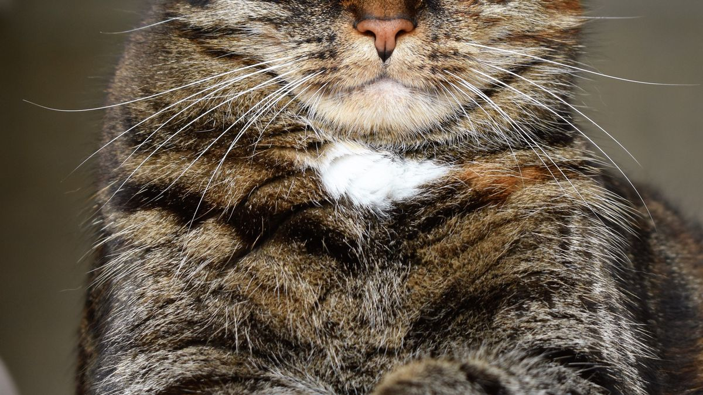
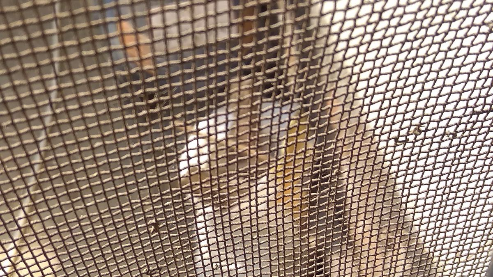

산책 후 에어컨 앞에서 40분 헥헥
7월 저녁, 10분으로 줄인 산책을 마치고 집에 들어온 소형견이 곧바로 에어컨 출구 아래 매트에 누웠습니다. 보호자는 '시원해서 다행'이라고 생각했지만, 40분 뒤에도 헥헥거림이 가라앉지 않았고, 물그릇은 그대로였습니다. 메모를 보면 산책 시간은 줄였지만, 귀가 후 식히기·휴식 자리는 정해져 있지 않았습니다.
이 글은 열사병 진단이나 응급 처치를 다루지 않습니다. 여름 집 안에서 호흡·체온·휴식을 관찰하고, 산책 후 10분 식히기 루틴을 정리합니다. 산책을 줄일지는 날씨 산책 조절 글, 물그릇·음수는 물 섭취 글을 먼저 보세요.
실외만 줄이면 끝이 아닌 이유
여름 건강은 '산책 5분 줄이기'만으로 끝나지 않는 경우가 많습니다. 집에 들어온 뒤 에어컨 직풍·뜨거운 바닥·습한 털이 겹치면, 실외에서 덜 뛰었어도 실내에서 호흡이 무거워질 수 있습니다.

짧은 코·노견·심장·호흡이 평소 무거운 개체, 장마처럼 습도가 높은 날은 실내 관찰 비중을 더 늘리는 편이 안전합니다. 고양이는 헥헥거림이 적어도 숨은 곳에 오래 머무름·식욕 감소·화장실 패턴 변화로 더위 스트레스가 드러나는 경우가 있습니다.
집에서 볼 5가지 신호
아래 5가지를 아침·저녁 각 3분, 총 하루 6분이면 충분한 출발점입니다. 숫자보다 평소 대비 변화를 메모하세요.
- 호흡: 헥헥 속도·혀 길이·30분 이상 지속 여부. 실내에서도 가라앉지 않으면 휴식·물·환기부터 조정
- 활동·식욕: 산책·놀이 후 회복 시간(평소 10분→30분 이상), 그릇에 남긴 양(%). 더운 날 식욕이 20% 줄면 흔하지만 48시간 50% 미만은 메모
- 수면·휴식: 에어컨 직풍 아래만 눕는지, 타일·그늘을 찾는지. 낮잠이 2시간 넘게 이어지면 활동량과 함께 기록
- 발·귀·코: 발바닥·귀 끝·코가 평소보다 뜨거운지(손등으로 가볍게). 붉은기·절뚝임은 산책 후 발 관리와 함께 봄
- 실내 환경: 에어컨 직풍 여부, 바닥 온도, 습도 60% 넘음. 환기·제습은 환기·습도·계절 점검 글 참고
관찰 메모 형식은 집에서 관찰 글과 같습니다. '7/12 저녁 헥헥 25분, 물 2모금, 그늘 매트' 한 줄이면 충분합니다.
귀가 후 10분 식히기
산책·실내 놀이 후에는 바로 에어컨·식사·목욕으로 넘어가지 않습니다. 순서를 고정하면 가족이 번갈아 해도 빠뜨리기 어렵습니다.
- 2분: 현관에서 발·배 털 닦기(미지근한 물·수건). 뜨거운 보도 후에는 발 2~3분 우선
- 3분: 에어컨 직풍이 아닌 통풍 좋은 그늘에서 앉거나 눕기. 타일·서늘한 매트가 있으면 그 위
- 2분: 미지근한 물 2~3모금(억지로 많이 마시게 하지 않음). 그릇 위치는 물 섭취 글처럼 고정
- 3분: 호흡이 평소 속도로 돌아왔는지 확인. 여전히 빠르면 활동·급여를 30분 미룸
장마·습도 높은 날은 건조까지 포함해 장마철 위생 글의 10분 루틴과 맞춰도 됩니다. 전신 목욕은 식힌 뒤 별도 시간에.
휴식 자리·에어컨·바닥
여름 휴식은 '시원한 곳'이 아니라 직풍 없이 서늘한 곳이 기준입니다.

- 에어컨: 출구 1m 이내 휴식 매트는 옮기거나 바람막이(수건·가구)로 직풍 차단
- 바닥: 남향·베란다 연결 공간은 오후에 뜨거워질 수 있음. 타일·서늘한 복도 구석을 대안으로
- 낮잠: 더운 날 낮잠이 30~60분 늘 수 있음. 수면 패턴은 수면 루틴 글과 함께 기록
- 고양이: 캣타워 최상단·창가 햇빛은 오후에 뜨거울 수 있어, 화장실 근처·침대 아래 등 그늘을 하나 더 열어 둠
차 안·현관·베란다에 잠깐 두는 것도 실내 열사병 위험에 포함됩니다. '잠깐'도 직사광선·밀폐 공간은 피하세요.
병원 검토를 생각할 때
이 글은 상담 시점을 대신 정하지 않습니다. 다만 아래 패턴이 48시간 이상이면 메모와 함께 검진을 검토하는 집이 많습니다.
- 실내에서도 헥헥·호흡 곤란이 30분 넘게 지속
- 식욕 50% 미만이 2일 연속, 또는 구토·설사가 하루 2회 이상 반복
- 활동 거의 없음+은신 위치만 고집(고양이 포함)
- 발바닥·귀가 뜨겁고 무기력함이 함께 있음
응급으로 느껴지면 검색보다 연락처를 먼저 꺼내세요. 평소 관찰 메모가 있으면 '언제부터인지' 설명이 짧아집니다.
이번 주 적용하기
여름 실내 관리는 '완벽한 온도'보다 귀가 후 10분+하루 2회 3분 관찰이 먼저입니다. 산책을 줄인 날도 실내 루틴은 유지하세요.

폭염 주간에는 오전·저녁 산책 후 같은 10분 순서를 쓰고, 한낮은 실내 놀이만 하는 집도 많습니다.
에어컨을 켠 직후 바로 밖에서 들어오면 체온 차로 헥헥이 길어질 수 있습니다. 현관에서 2분 서 있게 하거나 발 닦기부터 시작하세요.
이번 주 여름 실내 체크리스트입니다. 항목 3개만 골라 쓰세요.
- 귀가 후 발 닦기→그늘 3분→물 2모금 순서를 지켰습니다.
- 에어컨 직풍 아래 휴식 매트를 옮기거나 바람을 막았습니다.
- 호흡·식욕·수면·발·귀·실내 환경 5가지를 하루 2회 적었습니다.
- 헥헥이 30분 넘으면 급여·놀이를 30분 미뤘습니다.
- 물그릇을 2곳 이상·같은 자리에 두었습니다.
- 차·베란다·현관 직사광선에 장시간 두지 않았습니다.
- 48시간 같은 패턴이면 메모와 함께 검진을 검토했습니다.
더운 날 '오늘은 실내 휴식 성공'도 기록입니다. 내일 산책 분을 조절하면 됩니다.
정리하며
산책을 10분 줄였는데도 헥헥이 길었던 집은, 실내에서 에어컨 직풍 아래로 바로 누운 경우가 많았습니다.
오늘은 귀가 후 10분 순서 하나만 정해 보세요. 발 닦기→그늘→물이면 충분한 출발점입니다.
이 글은 수의사 진단·응급 처치를 대체하지 않습니다. 불안할 때는 메모를 들고 상담을 검토하세요.
초보자가 자주 실수하는 포인트
- 산책 후 바로 에어컨 직풍 아래 눕히기
- 호흡이 길어져도 물·휴식 없이 놀이·급여 진행
- 실외만 줄이고 실내 바닥·습도는 점검 안 함
- 헥헥만 보고 식욕·수면 변화는 기록 안 함
- 차·베란다 잠깐 방치를 실내 관리로 착각
체크리스트
- 귀가 후 10분 식히기 순서
- 에어컨 직풍 차단
- 5가지 신호 하루 2회 메모
- 물그릇 2곳·같은 자리
- 48시간 패턴 시 검진 검토
자주 묻는 질문
- weather-walk-adjustments 글과 무엇이 다른가요?
- 날씨 산책 글은 실외에서 갈지·줄일지·실내 놀이로 바꿀지를 다룹니다. 이 글은 집에 들어온 뒤 10분 식히기·실내 5가지 관찰·휴식 자리에 집중합니다. 산책 조절 후 이 글 순서가 자연스럽습니다.
- 에어컨 없는 집은 어떻게 하나요?
- 통풍 좋은 그늘·타일·서늘한 복도·얼음 물그릇(2시간마다 교체)을 활용하세요. 선풍기는 직풍보다 간접 바람이 낫고, 습도가 높으면 제습·환기를 함께 봅니다.
- 고양이도 헥헥을 보나요?
- 개보다 드물지만 더위 스트레스 시 호흡이 빨라질 수 있습니다. 헥헥이 없어도 숨은 곳 고집·식욕 감소·화장실 패턴 변화를 5가지 신호에 포함해 보세요.
이 글은 초보자 기준으로 이해하기 쉽게 정리되었으며, 내용은 운영 과정에서 순차적으로 보완될 수 있습니다. 수의사 등 전문가의 진단·처치를 대체하지 않습니다.